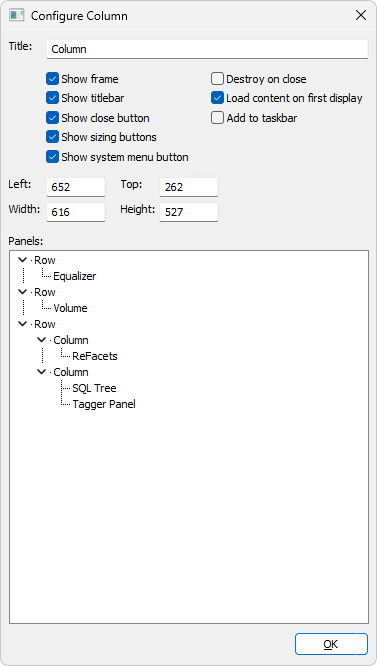

Open View > Popup panels > Configure and select a
popup to open its configuration dialog. You can also right-click the
popup's title bar and choose Configure popup.... The
hosted extension's context menu may provide the configuration command as
well, if the extension supports it.
All changes made in the Configure dialog are applied directly to the panel
as you make them, without a separate Apply step or further confirmation.
This includes panel settings and Panels Tree changes. The
OK button simply closes the dialog.

Options
Title
Sets the popup window title.
Show frame
Shows or hides the window frame.
Show titlebar
Shows or hides the title bar.
Show close button
Controls the close button. When disabled, the system-menu and sizing-button
options are also disabled.
Show sizing buttons
Controls the sizing buttons in the window frame.
Show system menu button
Controls the system-menu button in the title bar. When changed on a
visible panel, the panel is briefly hidden and shown again so the change
takes effect immediately. This causes a visible flicker.
Destroy on close
Destroys the popup when it is closed instead of keeping it available as a
hidden window.
Load content on first display
Defers loading the panel content until the popup is first displayed.
Add to taskbar
Controls whether the popup is shown as a taskbar window.
Left, Top, Width, Height
Show and edit the popup window position and size. Width and height must
be positive. These fields are unavailable while the window is minimized
or maximized.
Panels Tree
The Panels Tree is shown when the popup contains a panel container. It
displays the container's nested panel layout. Right-clicking a tree node
selects that node and opens its context menu. Right-clicking empty tree
space opens the menu for the root container.